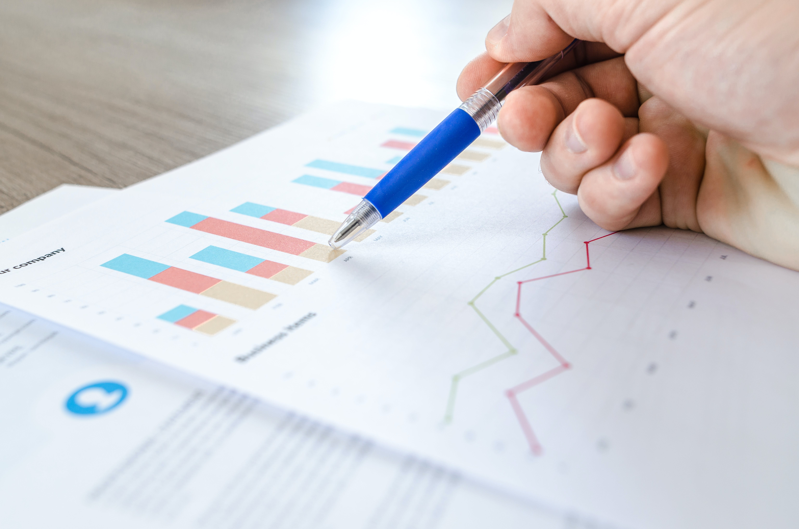

The Team
While working on the project ofcourse i would need a team which can help me build but also learn more during the creation of thr project.
Our Team consisted of:
- Koen Hillbrands, Skill: Front-end and design
- Justin Veenhuis, Skill: Design
- Emir Turunç, Skill: Research and documentation
- Jasper van den Heuvel (me) Skill: Front/back-end, Research and Design
Research
Ofcourse every good product needs good reserach. Together with the team we divided who would do what type of research.
planned as following:
- Emir Turunç, Task: Survey's
- Justin Veenhuis, Task: Interviews
- Koen Hillbrands, Task: Interviews
- Jasper van den Heuvel (me) Task: Library/Online research
With the divided research task we were able to create a research document which we could use to create a good product.
Since this is my portfolio you can download my research document. And also the complete document of the team beneath. I feel like i did a good job in the reserach part. but as team we could've done better
My Research Complete Document

Concept
After the research we were able to create a concept, and with this a concept document. Again here we divided the task, this way everyone is able to do something for the project and strengthen their weakneses.
With the total team we were able to create a concept document which we could use to describe the concept oof the product to our stakeholder and the teacher.
Since this is my portfolio you can download my concept document.
My Concept Document
Design
After doing the research and creating the concept of the product we were able to start designing the product. I first started with the wireframes creating a skeleton for the look of the project
after creating the Wireframes we asked Josh for feedback. He said :
we needed to do some user testing when we are with finished our prototype to show what the best way was we could show our data that makes it accessible to everyone. Josh was positive about our design and said it looked good
After getting the feedback from Josh i went on finishing the concept document while Koen started building the the mid-prototype and Justin started with the design of the product.
Emir worked on the Logo of Synq. you can see and open the design on the right.
Prototype
After i created the Wireframe i also made the prototype for the wireframe, this we we could ask for feedback on user response. After that feedback Koen and Justin did the complete prototyping on the final design
Testing
With our prototype complete now we were able to do some user testing. Emir was responsive for this testing fase and made the following document:
User Testing


Coding
After doing research, creating a concept, designing and prototyping it was time to actually start building the product.
The bigges part of the code was done by Koen and Me. As you can see in our github repository (Button beneath) we've build almost the intire website.
i first started with creating the template an navigation of the page, beceause this would be the same on (almost) every page. After that i started with adding the static conetent, and Koen went on discovering Charts.js and how we could use this in our project. this turned out great!!
So a big thankyou to Koen for discovering Charts.js and implementing it in our project. I feel like we could havce done a better job if the rest of the team (tried) to help us with the coding part. But i'm happy with the end result of the project.
Live demo Open Gitlab
Final product
After creating the product ofcourse we had to present it, but on just that day Koen got i'll.... So it came down to Emir, Justin and Me. We planned on meeting at school at 8:45 to be on time for the presentation.
But when i arrived at school i got a message from Justin saying he was stuck in trafic and didn't know if he would make it on time. So it came down to me and Emir but since We needed someone to film and Emir did not want to present i had to do
the presentation on my own. I was really nervous but i think i did a good job presenting the product.
You can view the presentation beneath.
View Presentation